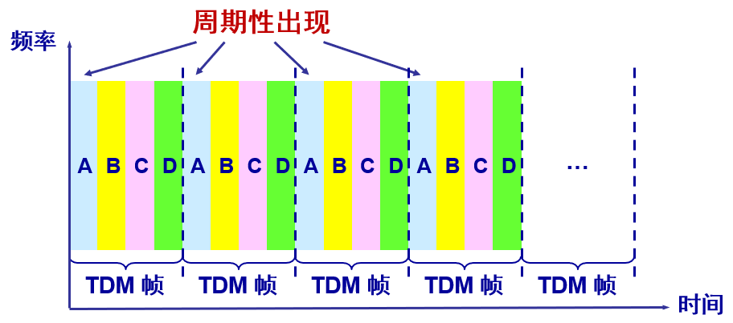

概述
互联网结构
从互联网的工作方式上看，网络拓扑结构可以划分为两大块：边缘部分和核心部分
- 边缘部分：由所有连接在互联网上的主机组成，这部分是用户直接使用的。
- 核心部分：由大量网络和连接这些网络的路由器组成，这部分是为边缘部分提供服务的。
在网络端系统之间的通信方式可划分为：客户-服务器方式（C/S方式）和对等方式（P2P）
电路、分组和报文交换
电路交换分为三个阶段：建立连接、通话、释放连接。电路交换用于电话通信系统，两个用户要通信之前需要建立一条专用的物理链路，并且在整个通信过程中始终占用该链路。
分组交换的主要特点：
- 采用存储转发技术
- 在发送端，先把较长的报文划分成较短的、固定长度的数据段
- 一个数据段前面添加上首部构成分组
报文交换：基于存储转发原理，时延较长，从几分钟到几小时不等。现在报文交换已经很少有人使用了。
总结：若要连续传送大量的数据，且其传送时间远大于连接建立时间，则电路交换的传输速率较快。报文交换和分组交换不需要预先分配传输带宽，在传送突发数据时可提高整个网络的信道利用率。由于一个分组的长度往往远小于整个报文的长度，因此分组交换比报文交换的时延小，同时也具有更好的灵活性。
计算机网络的性能
计算机网络的性能指标：
- 速率：数据的传送速率，它也称为数据率或比特率
- 带宽：在单位时间内网络中的某信道所能通过的“最高数据率”
- 吞吐量：在单位时间内通过某个网络（或信道、接口）的实际数据量
- 时延：指数据（一个报文或分组，甚至比特）从网络（或链路）的一端传送到另一端所需的时间，由发送时延、传播时延、处理时延和排队时延组成
- 时延带宽积：以比特为单位的链路长度即传播时延 *带宽
- 往返时间 RTT：从发送方发送数据开始，到发送方收到来自接收方的确认，总共经历的时间
- 利用率：分为信道利用率和网络利用率，信道利用率指出某信道有百分之几的时间是被利用的；网络利用率则是全网络的信道利用率的加权平均值
网络中的时延由以下几个不同的部分组成：
(1) 发送时延：传输时延，发送数据时，数据帧从结点进入到传输媒体所需要的时间。
(2) 传播时延：电磁波在信道中需要传播一定的距离而花费的时间。
(3) 处理时延：主机或路由器在收到分组时，为处理分组（例如分析首部、提取数据、差错检验或查找路由）所花费的时间。
(4) 排队时延：分组在路由器输入输出队列中排队等待处理所经历的时延。排队时延的长短往往取决于网络中当时的通信量。
注意：信道利用率并非越高越好。当某信道的利用率增大时，该信道引起的时延也就迅速增加。
网络协议三要素
语法：数据与控制信息的结构或格式
语义：需要发出任何控制信息，完成何种动作以及做出何种响应
同步：事件实现顺序的详细说明
计算机网络体系结构
五层协议
- 应用层：交互的数据单元为报文，任务是通过应用进程间的交互来完成特定网络应用，如 HTTP、DNS 等协议。
- 运输层：负责向两台主机进程之间的通信提供通用的数据传输服务，主要使用 TCP 和 UDP 协议。
- 网络层：负责为分组交换网上的不同主机提供通信服务，使用 IP 协议，把运输层传递下来的报文段或者用户数据报封装成分组（IP数据报）。
- 数据链路层：为同一链路的主机提供数据传输服务，将网络层交下来的 IP 数据报封装成帧，在两个相邻结点间的链路上传送帧。
- 物理层：考虑的是怎样在传输媒体上传输数据比特流，而不是指具体的传输媒体。物理层的作用是尽可能屏蔽传输媒体和通信手段的差异，使数据链路层感觉不到这些差异。
TCP/IP协议
它只有四层，相当于五层协议中数据链路层和物理层合并为网络接口层。
TCP/IP 体系结构不严格遵循 OSI 分层概念，应用层可能会直接使用 IP 层或者网络接口层。
OSI协议
其中表示层和会话层用途如下：
表示层 ：数据压缩、加密以及数据描述，这使得应用程序不必关心在各台主机中数据内部格式不同的问题。
会话层 ：建立及管理会话，查木马(netstat -n)。
五层协议没有表示层和会话层，而是将这些功能留给应用程序开发者处理。
数据在层间传递过程
在向下的过程中，需要添加下层协议所需要的首部或者尾部，而在向上的过程中不断拆开首部和尾部。
路由器只有下面三层协议，因为路由器位于网络核心中，不需要为进程或者应用程序提供服务，因此也就不需要传输层和应用层。
协议和服务
本层的服务用户只能看见服务而无法看见下面的协议。即下面的协议对上面的服务用户是透明的。
协议是“水平的”，即协议是控制对等实体之间通信的规则。
服务是“垂直的”，即服务是由下层向上层通过层间接口提供的。
上层使用服务原语获得下层所提供的服务。
分层的优缺点
好处如下：
- 各层之间相互独立：高层是不需要知道底层的功能是采取何种硬件技术实现的，它只需要知道通过与底层的接口就可以获得所需要的服务。
- 灵活性好：各层都可以采用最适当的技术来实现，例如某一层的实现技术发生了变化，只要这一层的功能与接口保持不变，实现技术的变化都并不会对其他各层以及整个系统的工作产生影响。
- 易于实现和标准化：采取了规范的层次结构去组织网络功能与协议，可以将计算机网络复杂的通信过程划分为有序的连续动作与有序的交互过程，有利于将网络复杂的通信工作过程化解为一系列可以控制和实现的功能模块，使得复杂的计算机网络系统变得易于设计，实现和标准化。
缺点如下：
- 降低效率。
- 有些功能会在不同的层次中重复出现，因而产生了额外开销。
物理层
基本概念
物理层考虑的是怎样才能在连接各种计算机的传输媒体上传输数据比特流，而不是指具体的传输媒体，尽可能地屏蔽掉不同传输媒体和通信手段的差异。
- 机械特性
- 电气特性
- 功能特性
- 过程特性
数据通信的基础知识
一个数据通信系统包括三大部分：源系统（或发送端、发送方）、传输系统（或传输网络）和目的系统（或接收端、接收方）
- 单向通信（单工）——只能有一个方向的通信而没有反方向的交互
- 双向交替通信（半双工）——通信的双方都可以发送信息，但不能双方同时发送(当然也就不能同时接收)
- 双向同时通信（全双工）——通信的双方可以同时发送和接收信息
基带信号（即基本频带信号）—— 来自信源的信号
调制分为两大类：
- 基带调制——仅对基带信号的波形进行变换，使它能够与信道特性相适应。变换后的信号仍然是基带信号，这种过程也称为编码 (coding)
- 带通调制——使用载波进行调制，把基带信号的频率范围搬移到较高的频段，并转换为模拟信号经过载波调制后的信号称为带通信号
常用编码方式
- 不归零制：正电平代表 1，负电平代表 0
- 归零制：正脉冲代表 1，负脉冲代表 0
- 曼彻斯特编码：位周期中心的向上跳变代表 0，位周期中心的向下跳变代表 1。也可反过来定义
- 差分曼彻斯特编码：在每一位的中心处始终都有跳变。位开始边界有跳变代表 0，而位开始边界没有跳变代表 1
限制码元在信道上的传输速率的因素有两个：
- 信道能够通过的频率范围
在任何信道中，码元传输的速率是有上限的，否则就会出现码间串扰的问题，使接收端对码元的判决（即识别）成为不可能。 - 信噪比
信噪比就是信号的平均功率和噪声的平均功率之比。常记为 S/N，并用分贝 (dB) 作为度量单位。即：信噪比(dB) = 10 log10(S/N) (dB)
信道的极限信息传输速率 C 可表达为：C = W log2(1+S/N) (bit/s)
其中：W 为信道的带宽（以 Hz 为单位）；S 为信道内所传信号的平均功率；N 为信道内部的高斯噪声功率。
香农公式表明：信道的带宽或信道中的信噪比越大，则信息的极限传输速率就越高；只要信息传输速率低于信道的极限信息传输速率，就一定可以找到某种办法来实现无差错的传输。
物理层下面的传输媒体
导引型传输媒体：
- 双绞线
- 同轴电缆
- 光缆
非导引型传输媒体——自由空间
信道复用技术
将一条物理信道分割成多条逻辑信道，即使用一个共享信道进行通信。
1.频分复用
频分复用的所有用户在同样的时间占用不同的带宽资源
2.时分复用
时分复用的所有用户在不同的时间占用同样的频带宽度
3.统计时分复用
统计时分复用是一种改良的时分复用
4.波分复用
波分复用就是光的频分复用。使用一根光纤来同时传输多个光载波信号。
5.码分复用
每一个比特时间划分为 m 个短的间隔，称为码片
每个站被指派一个唯一的 m bit 码片序列：
- 如发送比特 1，则发送自己的 m bit 码片序列
- 如发送比特 0，则发送该码片序列的二进制反码
每个站分配的码片序列不仅必须各不相同，并且还必须互相正交
数据链路层
点对点信道的数据链路层
数据链路和帧
链路 (link) 是一条无源的点到点的物理线路段，中间没有任何其他的交换结点。
数据链路 (data link) 除了物理线路外，还必须有通信协议来控制这些数据的传输。
数据链路层的协议数据单元——帧
三个基本问题
- 封装成帧
- 透明传输
- 差错检测
1.封装成帧
在一段数据的前后分别添加首部和尾部，然后就构成了一个帧。确定帧的界限（帧定界）
控制字符 SOH (Start Of Header) 表示帧的首部开始；
控制字符 EOT (End Of Transmission) 表示帧的结束；
2.透明传输
无论什么样的比特组合的数据，都能够按照原样没有差错地通过数据链路层。
如果数据中的某个字节的二进制代码恰好和 SOH 或 EOT 一样，数据链路层就会错误地“找到帧的边界”。
解决方法：字节填充或字符填充——插入一个转义字符 “ESC”
3.差错检测
在传输过程中可能会产生比特差错：1 可能会变成 0 而 0 也可能变成 1。在一段时间内，传输错误的比特占所传输比特总数的比率称为误码率 BER。
循环冗余检验 CRC
- 假设待传送的一组数据 M = 101001（现在 k = 6）
- 用二进制的模 2 运算进行 2^n 乘 M 的运算，这相当于在 M 后面添加 n 个 0
- 得到的 (k + n) 位的数除以事先选定好的长度为 (n + 1) 位的除数 P，得出商是 Q 而余数是 R，余数 R 比除数 P 少 1 位，即 R 是 n 位
- 将余数 R 作为冗余码拼接在数据 M 后面发送出去
无差错接受是指：凡是接受的帧（即不包括丢弃的帧），我们都能以非常接近于 1 的概率认为这些帧在传输过程中没有产生差错。
点对点协议 PPP
PPP 协议有三个组成部分：
- 一个将 IP 数据报封装到串行链路的方法。
- 一个建立、配置和测试数据链路连接的链路控制协议 LCP。
- 一套支持不同的网络层协议的网络控制协议 NCP。
PPP 帧的首部和尾部分别为 4 个字段和 2 个字段；标志字段 F = 0x7E；
PPP 是面向字节的，所有的 PPP 帧的长度都是整数字节
透明传输问题——字节填充和零比特填充
广播信道的数据链路层
CSMA/CD 协议
CSMA/CD 含义：载波监听多点接入 / 碰撞检测
- “多点接入”表示许多计算机以多点接入的方式连接在一根总线上
- “载波监听”是指每一个站在发送数据之前，用电子技术不停地检测总线上有没有其他计算机发送的数据信号，如果有，则暂时不要发送数据，以免发生碰撞。
- “碰撞检测”就是计算机边发送数据边检测信道上的信号电压大小。每一个正在发送数据的站，一旦发现总线上出现了碰撞，就要立即停止发送，然后等待一段随机时间后再次发送。
使用 CSMA/CD 协议的以太网不能进行全双工通信而只能进行双向交替通信（半双工通信）
二进制指数类型退避算法：
- 基本退避时间取为争用期 51.2 us（最短帧长64 B = 512 bit）
- 从整数集合[0,1,…, (2^k - 1)]中随机地取出一个数，记为 r。重传所需的时延就是 r 倍的基本退避时间，其中 k = Min[重传次数, 10]
- 当 k <= 10 时，参数 k 等于重传次数，当重传达 16 次仍不能成功时即丢弃该帧，并向高层报告
强化碰撞——当发送数据的站一旦发现发生了碰撞时：
- 立即停止发送数据
- 继续发送若干比特的人为干扰信号，以便让所有用户都知道现在已经发生了碰撞。
CSMA/CD 协议的要点
- 准备发送。在发送之前，必须先检测信道
- 检测信道。若检测到信道忙，则应不停地检测，一直等待信道转为空闲。若检测到信道空闲，并在 96 比特时间（帧间最小间隔）内信道保持空闲，就发送这个帧
- 检查碰撞。在发送过程中仍不停地检测信道，即网络适配器要边发送边监听。这里只有两种可能性：
- 发送成功：在争用期内一直未检测到碰撞。这个帧肯定能够发送成功。发送完毕后，其他什么也不做。然后回到 1
- 发送失败：在争用期内检测到碰撞。这时立即停止发送数据，并按规定发送人为干扰信号。适配器接着就执行指数退避算法，等待 r 倍 512 比特时间后，返回到步骤 2，继续检测信道。但若重传达 16 次仍不能成功，则停止重传而向上报错
使用集线器的星形拓扑
集线器的一些特点：
- 使用集线器的以太网在逻辑上仍是一个总线网，各工作站使用的还是 CSMA/CD 协议，并共享逻辑上的总线
- 集线器很像一个多接口的转发器，工作在物理层
以太网的 MAC 层
硬件地址又称为物理地址或 MAC 地址。类型字段用来标志上一层使用的是什么协议。
MAC 地址是链路层地址，长度为 6 字节（48 位），用于唯一标识网络适配器（网卡）。
一台主机拥有多少个网络适配器就有多少个 MAC 地址。例如笔记本电脑普遍存在无线网络适配器和有线网络适配器，因此就有两个 MAC 地址
MAC 帧的格式
无效的 MAC 帧:
- 帧的长度不是整数个字节
- 用收到的帧检验序列 FCS 查出有差错
- 数据字段的长度不在 46 ~ 1500 字节之间，有效的 MAC 帧长度为 64 ~ 1518 字节之间
扩展的以太网
1.网桥
- 它根据 MAC 帧的目的地址对收到的帧进行转发和过滤
- 工作在数据链路层
- 当网桥收到一个帧时，并不是向所有的接口转发此帧，而是先检查此帧的目的 MAC 地址，然后再确定将该帧转发到哪一个接口，或把它丢弃
2.交换机
- 以太网交换机实质上就是一个多接口的网桥
- 根据 MAC 地址转发，有存储转发 方式和直通 方式
- 全双工方式工作在数据链路层
- 以太网交换机具有并行性，用户独享带宽
- 自学习功能
3.集线器
- 多个端口的转发器
- 半双工方式工作在物理层
- 工作原理广播形式
- 用户共享带宽
虚拟局域网——VLAN 是由一些局域网网段构成的与物理位置无关的逻辑组，而这些网段具有某些共同的需求。
虚拟局域网协议允许在以太网的帧格式中插入一个4字节的标识符，称为 VLAN 标记 (tag)，用来指明发送该帧的计算机属于哪一个虚拟局域网。

网络层
网际协议 IP
网际协议 IP 是 TCP/IP 体系中两个最主要的协议之一
与 IP 协议配套使用的还有三个协议：
- 地址解析协议 ARP
- 网际控制报文协议 ICMP
- 网际组管理协议 IGMP
分类的 IP 地址

地址解析协议 ARP
IP 地址与硬件地址：
- 硬件地址是数据链路层和物理层使用的地址
- IP 地址是网络层和以上各层使用的地址，是一种逻辑地址（IP 地址是用软件实现的）
网络层实现主机之间的通信，而链路层实现具体每段链路之间的通信。因此在通信过程中，IP 数据报的源地址和目的地址始终不变，而 MAC 地址随着链路的改变而改变。
ARP从网络层使用的 IP 地址，解析出在数据链路层使用的硬件地址
每个主机都有一个 ARP 高速缓存，里面有本局域网上的各主机和路由器的 IP 地址到 MAC 地址的映射表。
ARP 是解决同一个局域网上的主机或路由器的 IP 地址和硬件地址的映射问题。
IP 数据报
一个 IP 数据报由首部和数据两部分组成，首部的前一部分是固定长度，共 20 字节。
- 版本 : 有 4（IPv4）和 6（IPv6）两个值；
- 首部长度 : 占 4 位，因此最大值为 15。值为 1 表示的是 1 个 32 位字的长度，也就是 4 字节。因为固定部分长度为 20 字节，因此该值最小为 5。首部长度的最大值是 60 字节，如果可选字段的长度不是 4 字节的整数倍，就用尾部的填充部分来填充。
- 区分服务 : 用来获得更好的服务，一般情况下不使用。
- 总长度 : 包括首部长度和数据部分长度。数据报的最大长度为 65535 字节。
- 标识 : 在数据报长度过长从而发生分片的情况下，相同数据报的不同分片具有相同的标识符。
- 标志：目前只有两位有意义，最低位是 MF ，MF = 1 表示后面“还有分片”。MF = 0 表示最后一个分片。标志字段中间的一位是 DF ，只有当 DF =0 时才允许分片。
- 片偏移 : 和标识符一起，用于发生分片的情况，较长的分组在分片后某片在原分组中的相对位置。片偏移的单位为 8 字节。
- 生存时间 ：TTL，它的存在是为了防止无法交付的数据报在互联网中不断兜圈子。以路由器跳数为单位，当 TTL 为 0 时就丢弃数据报。
- 协议 ：指出携带的数据应该上交给哪个协议进行处理，例如 ICMP、TCP、UDP 等。
- 首部检验和 ：因为数据报每经过一个路由器，都要重新计算检验和，因此检验和不包含数据部分可以减少计算的工作量。
划分子网和无分类编址
通过在主机号字段中拿一部分作为子网号，把两级 IP 地址划分为三级 IP 地址。
要使用子网，必须配置子网掩码。
子网掩码——将 IP 地址的主机号进行子网划分。把子网掩码和 IP 地址进行逐位的与运算，就立即得出网络地址。
一个 B 类地址的默认子网掩码为 255.255.0.0，如果 B 类地址的子网占两个比特，那么子网掩码为 11111111 11111111 11000000 00000000，也就是 255.255.192.0。
无分类编址 CIDR 消除了传统 A 类、B 类和 C 类地址以及划分子网的概念，使用网络前缀和主机号来对 IP 地址进行编码，网络前缀的长度可以根据需要变化。
无分类编制CIDR 使用“斜线记法”，它又称为 CIDR 记法，即在 IP 地址面加上一个斜线“/”，然后写上网络前缀所占的位数。例如： 220.78.168.0 / 24
一个 CIDR 地址块中有很多地址，一个 CIDR 表示的网络就可以表示原来的很多个网络，并且在路由表中只需要一个路由就可以代替原来的多个路由，减少了路由表项的数量。把这种通过使用网络前缀来减少路由表项的方式称为路由聚合，也称为 构成超网 。
ICMP
为了更有效地转发 IP 数据报和提高交付成功的机会，在网际层使用了网际控制报文协议 ICMP。ICMP 封装在 IP 数据报中，不是高层协议，而是 IP 层的协议。
ICMP 差错报告报文共有 4 种
- 终点不可达
- 时间超过
- 参数问题
- 改变路由（重定向）
PING
Ping 是 ICMP 的一个重要应用，主要用来测试两台主机之间的连通性。
Ping 的原理是通过向目的主机发送 ICMP Echo 请求报文，目的主机收到之后会发送 Echo 回答报文。Ping 会根据时间和成功响应的次数估算出数据包往返时间以及丢包率。
Traceroute
Traceroute 是 ICMP 的另一个应用，用来跟踪一个分组从源点到终点的路径。
Traceroute 发送的 IP 数据报封装的是无法交付的 UDP 用户数据报，并由目的主机发送终点不可达差错报告报文。
- 源主机向目的主机发送一连串的 IP 数据报。第一个数据报 P1 的生存时间 TTL 设置为 1，当 P1 到达路径上的第一个路由器 R1 时，R1 收下它并把 TTL 减 1，此时 TTL 等于 0，R1 就把 P1 丢弃，并向源主机发送一个 ICMP 时间超过差错报告报文；
- 源主机接着发送第二个数据报 P2，并把 TTL 设置为 2。P2 先到达 R1，R1 收下后把 TTL 减 1 再转发给 R2，R2 收下后也把 TTL 减 1，由于此时 TTL 等于 0，R2 就丢弃 P2，并向源主机发送一个 ICMP 时间超过差错报文。
- 不断执行这样的步骤，直到最后一个数据报刚刚到达目的主机，主机不转发数据报，也不把 TTL 值减 1。但是因为数据报封装的是无法交付的 UDP，因此目的主机要向源主机发送 ICMP 终点不可达差错报告报文。
- 之后源主机知道了到达目的主机所经过的路由器 IP 地址以及到达每个路由器的往返时间。
路由选择协议
内部网关协议 RIP
RIP 是一种分布式的基于距离向量的路由选择协议。
RIP 协议要求网络中的每一个路由器都要维护从它自己到其他每一个目的网络的距离记录。
RIP 协议中的“距离”也称为“跳数”：
- 从一个路由器到直接连接的网络的距离定义为 1
- 从一个路由器到非直接连接的网络的距离定义为所经过的路由器数加 1
RIP 允许一条路径最多只能包含 15 个路由器。“距离”的最大值为 16 时即相当于不可达。
距离向量算法：
- 对地址为 X 的相邻路由器发来的 RIP 报文，先修改报文中的所有项目，把下一跳字段中的地址改为 X，并把所有的距离字段加 1；
- 对修改后的 RIP 报文中的每一个项目，进行以下步骤：
- 若原来的路由表中没有目的网络 N，则把该项目添加到路由表中；
- 否则：若下一跳路由器地址是 X，则把收到的项目替换原来路由表中的项目；否则：若收到的项目中的距离 d 小于路由表中的距离，则进行更新（例如原始路由表项为 Net2, 5, P，新表项为 Net2, 4, X，则更新）；否则什么也不做。
- 若 3 分钟还没有收到相邻路由器的更新路由表，则把该相邻路由器标为不可达，即把距离置为 16。
- 返回。
RIP协议特点：好消息传播得快，坏消息传播得慢
- 仅和相邻路由器交换信息
- 交换的信息是当前本路由器所知道的全部信息
- 按固定的时间间隔交换路由信息
RIP 协议实现简单，开销较小。但是 RIP 能使用的最大距离为 15，限制了网络的规模。路由器之间交换的路由信息是路由器中的完整路由表，因而随着网络规模的扩大，开销也就增加。并且当网络出现故障时，要经过比较长的时间才能将此消息传送到所有路由器，使更新过程的收敛时间过长。
内部网关协议 OSPF
OSPF 的原理很简单，但实现起来却较复杂。最短路径优先”是因为使用了 Dijkstra 提出的最短路径算法 SPF。
OSPF 最主要的特征就是使用分布式的链路状态协议：
- 向本自治系统中所有路由器发送信息（洪泛法）
- 发送的信息就是与本路由器相邻的所有路由器的链路状态
- 只有当链路状态发生变化时，路由器才用洪泛法向所有路由器发送此信息
各路由器之间频繁地交换链路状态信息，因此所有的路由器最终都能建立一个链路状态数据库。实际上就是全网的拓扑结构图，它在全网范围内是一致的。
OSPF 的更新过程收敛得快是其重要优点。OSPF 不用 UDP 而是直接用 IP 数据报传送，构成的数据报很短，减少路由信息的通信量；可以不必将长的数据报分片传送。
外部网关协议 BGP
BGP 是不同自治系统的路由器之间交换路由信息的协议。
BGP 只能是力求寻找一条能够到达目的网络且比较好的路由（不能兜圈子），而并非要寻找一条最佳路由。
每一个自治系统的管理员要选择至少一个路由器作为该自治系统的“ BGP 发言人”。
一个 BGP 发言人与其他自治系统中的 BGP 发言人要交换路由信息，就要先建立 TCP 连接，然后在此连接上交换 BGP 报文以建立 BGP 会话，利用 BGP 会话交换路由信息。
在BGP 刚刚运行时，BGP 的邻站是交换整个的 BGP 路由表。但以后只需要在发生变化时更新有变化的部分。节省网络带宽和减少路由器的处理开销。
三种协议辨析
RIP使用UDP，OSPF使用IP，而BGP使用TCP的原因？
- RIP协议采用UDP是因为RIP每周期需全网组播路由信息，路由信息数目较大，UDP虽不保证可靠交付，但开销小可以提高效率。
- OSPF本身提供主从协商机制，可以保证可靠的传输，另外全网路由器保持着同样的一个LSDB（链路状态数据库），当拓扑发生变化时，需要携带的变更信息较少，通过IP协议即可完成。
- BGP为边界网关协议，因携带的路由信息较多，且可能跨不同网络传送路由信息，为保证可靠性，需使用TCP协议，可兼顾容量和可靠性
为什么RIP周期性地和邻站交换路由信息而BGP却不这样做？
内部网关协议主要是设法使数据报在一个自治系统中尽可能有效的从源站传送到目的站，在一个自治系统内部并不需要考虑其他方面的策略，然而BGP使用的环境却不同。
主要有以下三个原因：
第一，因特网规模太大，使得自治系统之间的路由选择非常困难；
第二，对于自治系统之间的路由选择，要寻找最佳路径并不现实；
第三，自治系统之间的路由选择必要考虑有关策略。
由于上述情况，BGP只能是力求寻找一条能够到达目的网络且比较好的路由，而并非要寻找一条最佳路径，所以BGP不需要像RIP那样周期性地和邻站交换路由信息。
虚拟专用网 VPN
由于 IP 地址的紧缺，一个机构能够申请到的IP地址数往往远小于本机构所拥有的主机数。考虑到互联网并不很安全，一个机构内也并不需要把所有的主机接入到外部的互联网。
利用公用的互联网作为本机构各专用网之间的通信载体，这样的专用网又称为虚拟专用网VPN。
有三个专用地址块：
- 10.0.0.0 ~ 10.255.255.255（A类，或记为10.0.0.0/8，它又称为24位块）
- 172.16.0.0 ~ 172.31.255.255（B类，或记为172.16.0.0/12，它又称为20位块）
- 192.168.0.0 ~ 192.168.255.255（C类，或记为192.168.0.0/16，它又称为16位块）
网络地址转换 NAT
在专用网连接到互联网的路由器上安装 NAT 软件。装有 NAT 软件的路由器叫作 NAT路由器，它至少有一个有效的外部全球IP地址。
所有使用本地地址的主机在和外界通信时，都要在 NAT 路由器上将其本地地址转换成全球 IP 地址，才能和互联网连接。
运输层
运输层向它上面的应用曾提供通信服务。它属于面向通信部分的最高层，同时也是用户功能中的最低层。
通信的真正的端点并不是主机而是主机中的进程。运输层提供了进程间的逻辑通信，向高层用户屏蔽了下面网络层的核心细节，使应用程序看起来像是在两个运输层实体之间有一条端到端的逻辑通信信道。
运输层的两个主要协议：用户数据报协议 UDP 和 传输控制协议 TCP
UDP
用户数据报协议 UDP 特点：
- UDP 是无连接的
- UDP 使用尽最大努力交付
- UDP 是面向报文的（对于应用程序传下来的报文不合并也不拆分，只是添加 UDP 首部，就向下交付 IP 层，一次发送一个报文）
- UDP 没有拥塞控制
- UDP 支持一对一、一对多、多对一和多对多的交互通信
- UDP 的首部开销小
首部字段只有 8 个字节，包括源端口、目的端口、长度、检验和。12 字节的伪首部是为了计算检验和临时添加的。
虽然在 UDP 之间的通信要用到其端口号，但由于 UDP 的通信是无连接的，因此不需要使用套接字。
TCP
TCP 特点
- TCP 是面向连接的运输层协议
- 每一条 TCP连接只能是点对点的
- TCP 提供可靠的交付服务
- TCP 提供全双工通信
- 面向字节流
- TCP 中的“流”指的是流入或流出进程的字节序列。
- “面向字节流”的含义是：虽然应用程序和 TCP 的交互是一次一个大小不等的数据块，但 TCP 把应用程序交下来的数据看成仅仅是一连串无结构的字节流。
- TCP有一个缓冲，当应用程序传送的数据块太长，TCP就可以把它划分短一些再传送。如果应用程序一次只发送一个字节，TCP也可以等待积累有足够多的字节后再构成报文段发送出去。
TCP 的连接
TCP 把连接作为最基本的抽象，每一条 TCP 连接有两个端点。
TCP 连接的端点叫做套接字 (socket) 或插口。套接字 socket = (IP地址 : 端口号)
同一个 IP 地址可以有多个不同的 TCP 连接。同一个端口号也可以出现在多个不同的 TCP 连接中。
可靠传输原理
理想的传输条件有以下两个特点：
- 传输信道不产生差错。
- 不管发送方以多快的速度发送数据，接收方总是来得及处理收到的数据
然而实际的网络都不具备以上两个理想条件。必须使用一些可靠传输协议，在不可靠的传输信道实现可靠传输。下文介绍停止等待协议和连续 ARQ 协议。
停止等待协议
“停止等待”就是每发送完一个分组就停止发送，等待对方的确认。在收到确认后再发送下一个分组。停止等待协议的优点是简单，缺点是信道利用率太低。
无差错情况
A 发送分组 M1，发完就暂停发送，等待 B 的确认 (ACK)。B 收到了 M1 向 A 发送 ACK。A 在收到了对 M1 的确认后，就再发送下一个分组 M2。
出现差错
在接收方 B 会出现两种情况：（1）B 接收 M1 时检测出了差错，就丢弃 M1。（2）M1 在传输过程中丢失了。
在这两种情况下，B 都不会发送任何信息。解法方法：超时重传
- A 为每一个已发送的分组都设置了一个超时计时器
- A 只要在超时计时器到期之前收到了相应的确认，就撤销该超时计时器，继续发送下一个分组 M2
确认丢失和确认迟到
B 所发送的对 M1 的确认丢失了，那么 A 在设定的超时重传时间内不能收到确认。因此 A 在超时计时器到期后就要重传 M1。
假定 B 又收到了重传的分组 M1。这时 B 应采取两个行动：
- 第一，丢弃这个重复的分组 M1，不向上层交付。
- 第二，向 A 发送确认。
传输过程中没有出现差错，但 B 对分组 M1 的确认迟到了。A 会收到重复的确认。对重复的确认的处理很简单：收下后就丢弃。B 仍然会收到重复的 M1，并且同样要丢弃重复的 M1，并重传确认分组。
应注意以下三点：
- 在发送完一个分组后，必须暂时保留已发送的分组的副本，以备重发。
- 分组和确认分组都必须进行编号。
- 超时计时器的重传时间应当比数据在分组传输的平均往返时间更长一些。
使用上述的确认和重传机制，我们就可以在不可靠的传输网络上实现可靠的通信。像上述的这种可靠传输协议常称为自动重传请求 ARQ 。意思是重传的请求是自动进行的，接收方不需要请求发送方重传某个出错的分组。
连续 ARQ 协议
发送方维持的发送窗口，位于发送窗口内的分组都可连续发送出去，而不需要等待对方的确认。
连续 ARQ 协议规定，发送方每收到一个确认，就把发送窗口向前滑动一个分组的位置。
接收方一般采用累积确认的方式。即不必对收到的分组逐个发送确认，而是对按序到达的最后一个分组发送确认，这样就表示：到这个分组为止的所有分组都已正确收到了。
- 优点：容易实现，即使确认丢失也不必重传。
- 缺点：不能向发送方反映出接收方已经正确收到的所有分组的信息。（存在未按序到达的）
TCP首部格式
- 源端口和目的端口：端口是运输层与应用层的服务接口，运输层的复用和分用功能都要通过端口才能实现
- 序号：指的是本报文段所发送的数据的第一个字节的序号
- 确认号：期望收到 对方的下一个报文段的数据的第一个字节的序号
- 数据偏移： TCP 报文段的数据起始处距离 TCP 报文段的起始处有多远
- 保留字：保留为今后使用，但目前应置为 0
- 紧急 URG = 1 时，表明紧急指针字段有效，告诉系统此报文段中有紧急数据，应尽快传送
- 确认 ACK = 1 时，确认号字段才有效，TCP 规定，在连接建立后所有传送的报文段都必须把 ACK 置 1
- 推送 PSH = 1 时，尽快地交付接收应用进程，而不再等到整个缓存都填满了后再向上交付
- 复位 RST = 1 时，TCP 连接中出现严重差错，必须释放连接，然后再重新建立运输连接
- 同步 SYN = 1 时，这是一个连接请求或连接接受报文
- 终止 FIN = 1 时，此报文段的发送端的数据已发送完毕，并要求释放运输连接
- 窗口：用来让对方设置发送窗口，因为接收方的数据缓存空间是有限
- 检验和：检验的范围包括首部和数据这两部分
- 紧急指针：指出在本报文段中紧急数据共有多少个字节
- 选项：最大报文段长度 MSS、窗口扩大选项、时间戳选项、选择确认选项
- 填充：使整个首部长度是 4 字节的整数倍
TCP 可靠传输实现
滑动窗口
TCP 的滑动窗口是以字节为单位。
假定 A 收到了 B 发来的确认报文段，其中窗口是 20 字节，而确认号是 31。根据这两个数据，A 就构造出自己的发送窗口。
发送窗口表示：在没有收到 B 的确认的情况下，A 可以连续把窗口内的数据都发送出去。 发送窗口里面的序号表示允许发送的序号。
发送窗口内的字节都允许被发送，接收窗口内的字节都允许被接收。如果发送窗口左部的字节已经发送并且收到了确认，那么就将发送窗口向右滑动一定距离，直到左部第一个字节不是已发送并且已确认的状态；接收窗口的滑动类似，接收窗口左部字节已经发送确认并交付主机，就向右滑动接收窗口。
接收窗口只会对窗口内最后一个按序到达的字节进行确认，例如接收窗口已经收到的字节为 {31, 34, 35}，其中 {31} 按序到达，而 {34, 35} 就不是，因此只对字节 31 进行确认。发送方得到一个字节的确认之后，就知道这个字节之前的所有字节都已经被接收。
发送缓存用来暂时存放：
- 发送应用程序传送给发送方 TCP 准备发送的数据
- TCP 已发送出但尚未收到确认的数据
接收缓存用来暂时存放：
- 按序到达的、但尚未被接收应用程序读取的数据
- 不按序到达的数据。
超时重传
TCP 采用了一种自适应算法，它记录一个报文段发出的时间，以及收到相应的确认的时间。这两个时间之差就是报文段的往返时间 RTT。
TCP 保留了 RTT 的一个加权平均往返时间 RTTs（这又称为平滑的往返时间）。
第一次测量到 RTT 样本时，RTTs 值就取为所测量到的 RTT 样本值。以后每测量到一个新的 RTT 样本，就按下式重新计算一次 RTTs：
- RTTs = (1-a) * RTTs + a * RTT
式中，0 <=a<= 1。若 a 很接近于零，表示 RTT 值更新较慢。若选择 a 接近于 1，则表示 RTT 值更新较快。RFC 2988 推荐的 a 值为 1/8。
超时重传时间 RTO 应略大于上面得出的加权平均往返时间 RTTS。
- RTO = RTTs + 4 * RTTd
RTTd 是 RTT 的偏差的加权平均值。第一次测量时，RTTd 值取为测量到的 RTT 样本值的一半。在以后的测量中，则使用下式计算加权平均的 RTTd：
- RTTd = (1-b) * RTTd + b * |RTTs-RTT|
b 是个小于 1 的系数，其推荐值是 1/4。
Karn 算法：在计算平均往返时间 RTT 时，只要报文段重传了，就不采用其往返时间样本。
但是，这又引起新的问题。当报文段的时延突然增大了很多时，在原来得出的重传时间内，不会收到确认报文段。于是就重传报文段。但根据 Karn 算法，不考虑重传的报文段的往返时间样本。这样，超时重传时间就无法更新。
修正的 Karn 算法：报文段每重传一次，就把 RTO 增大一些，典型值是 2 倍。
当不再发生报文段的重传时，才根据报文段的往返时延更新平均往返时延 RTT 和超时重传时间 RTO 的数值。
选择确认
若收到的报文段无差错，只是未按序号，中间还缺少一些序号的数据，那么能否设法只传送缺少的数据而不重传已经正确到达接收方的数据？
选择确认 SACK就是一种可行的处理方法。
接收方收到了和前面的字节流不连续的两个字节块，如果这些字节的序号都在接收窗口之内，那么接收方就先收下这些数据，但要把这些信息准确地告诉发送方，使发送方不要再重复发送这些已收到的数据。
TCP 的流量控制
流量控制就是让发送方的发送速率不要太快，既要让接收方来得及接收，也不要使网络发生拥塞。
发送方的发送窗口不能超过接收方给出的接收窗口的数值。
TCP 的窗口单位是字节，不是报文段。
TCP 的拥塞控制
拥塞——在某段时间，若对网络中某资源的需求超过了该资源所能提供的可用部分，网络的性能就要变坏。
网络拥塞往往是由许多因素引起的。例如：
- 存储空间限制；
- 带宽容量的限制；
- 处理器性能限制；
- 复杂的网络结构；
- 不合理的路由原则。
拥塞控制与流量控制的区别：
- 拥塞控制就是防止过多的数据注入到网络中，使网络中的路由器或链路不致过载。
- 拥塞控制所要做的都有一个前提，就是网络能够承受现有的网络负荷。
- 拥塞控制是一个全局性的过程，涉及到所有的主机、所有的路由器，以及与降低网络传输性能有关的所有因素。
- 流量控制往往指点对点通信量的控制，是个端到端的问题。
- 流量控制所要做的就是抑制发送端发送数据的速率，以便使接收端来得及接收。
TCP 采用基于窗口的方法进行拥塞控制。该方法属于闭环控制方法。
TCP发送方维持一个拥塞窗口 cwnd，设置慢开始门限 ssthresh：
- 慢开始（cwnd < ssthresh、超时 ）
- 拥塞避免（cwnd >= ssthresh ）
- 快重传和快恢复（3-ACK）

慢开始与拥塞避免
发送的最初执行慢开始，令 cwnd = 1，发送方只能发送 1 个报文段；当收到确认后，将 cwnd 加倍，因此之后发送方能够发送的报文段数量为：2、4、8 …
注意到慢开始每个轮次都将 cwnd 加倍，这样会让 cwnd 增长速度非常快，从而使得发送方发送的速度增长速度过快，网络拥塞的可能性也就更高。设置一个慢开始门限 ssthresh，当 cwnd >= ssthresh 时，进入拥塞避免，每个轮次只将 cwnd 加 1。
如果出现了超时，则令 ssthresh = cwnd / 2， cwnd = 1，然后重新执行慢开始。
快重传与快恢复
在接收方，要求每次接收到报文段都应该对最后一个已收到的有序报文段进行确认。例如已经接收到 M1 和 M2，此时收到 M4，应当发送对 M2 的确认。
在发送方，如果收到3个重复确认（3-ACK），那么可以知道下一个报文段丢失，此时执行快重传，立即重传下一个报文段。例如收到三个 M2，则 M3 丢失，立即重传 M3。
在这种情况下，只是丢失个别报文段，而不是网络拥塞。因此执行快恢复，令 ssthresh = cwnd / 2 ，cwnd = ssthresh，注意到此时直接进入拥塞避免。
慢开始和快恢复的快慢指的是 cwnd 的设定值，而不是 cwnd 的增长速率。慢开始 cwnd 设定为 1，而快恢复 cwnd 设定为 ssthresh。
TCP 的运输连接
TCP 是面向连接的协议。运输连接有三个阶段：连接建立、数据传送、连接释放
TCP 连接建立过程中要解决的三个问题
- 要使每一方能够确知对方的存在
- 要允许双方协商一些参数（如最大窗口值、是否使用窗口扩大选项和时间戳选项以及服务质量等）
- 能够对运输实体资源（如缓存大小、连接表中的项目等）进行分配
TCP 的连接建立
握手需要在客户和服务器之间交换三个 TCP 报文段，称之为三报文握手。
- 首先 B 处于 LISTEN（监听）状态，等待客户的连接请求
- A 向 B 发出连接请求报文段，其首部中的同步位 SYN = 1，并选择序号 seq = x
- B 收到连接请求报文段后，如同意，B 在确认报文段中应使 SYN = 1，使 ACK = 1，其确认号 ack = x + 1，自己选择的序号 seq = y
- A 收到此报文段后向 B 给出确认，其 ACK = 1，确认号 ack = y + 1，seq = x + 1
- B 收到 A 的确认后，连接建立
三次握手的原因：
第三次握手是为了防止失效的连接请求到达服务器，让服务器错误打开连接。
客户端发送的连接请求如果在网络中滞留，那么就会隔很长一段时间才能收到服务器端发回的连接确认。客户端等待一个超时重传时间之后，就会重新请求连接。但是这个滞留的连接请求最后还是会到达服务器，如果不进行三次握手，那么服务器就会打开两个连接。如果有第三次握手，客户端会忽略服务器之后发送的对滞留连接请求的连接确认，不进行第三次握手，因此就不会再次打开连接。
TCP 的连接释放
- A 发送连接释放报文，FIN = 1，其序号 seq = u
- B 收到之后发出确认，ack = u + 1，自己的序号 seq = v。此时 TCP 属于半关闭状态，B 能向 A 发送数据但是 A 不能向 B 发送数据。
- 若 B 已经没有要向 A 发送的数据，发送连接释放报文，FIN=1，seq = w, ack = u + 1。
- A 收到连接释放报文段后，必须发出确认，ACK = 1，确认号 ack = w+ 1，序号 seq = u + 1。 进入 TIME-WAIT 状态，等待 2 MSL（最大报文段寿命）后释放连接。
- B 收到 A 的确认后释放连接
四次挥手的原因：
客户端发送了 FIN 连接释放报文之后，服务器收到了这个报文，就进入了 CLOSE-WAIT 状态。这个状态是为了让服务器端发送还未传送完毕的数据，传送完毕之后，服务器会发送 FIN 连接释放报文。
A 必须等待 2MSL 的时间的原因：
- 保证 A 发送的最后一个 ACK 报文段能够到达 B
- 让本连接持续时间内所产生的所有报文都从网络中消失，使得下一个新的连接不会出现旧的连接请求报文
应用层
应用层就是规定应用进程在通信时所遵循的协议。应用层的许多协议都是基于客户服务器方式。客户(client)和服务器(server)都是指通信中所涉及的两个应用进程。
域名系统 DNS
DNS 是一个分布式数据库，提供了主机名和 IP 地址之间相互转换的服务。这里的分布式数据库是指，每个站点只保留它自己的那部分数据。
域名只是个逻辑概念，并不代表计算机所在的物理地点。
域名的解析过程：
主机向本地域名服务器的查询一般都是采用递归查询
如果主机所询问的域名本地域名服务器不知道其IP 地址，那么本地域名服务器就以 DNS 客户的身份，向其他根域名服务器继续发出查询请求报文。
本地域名服务器向根域名服务器的查询通常是采用迭代查询
当根域名服务器收到本地域名服务器的迭代查询请求报文时，要么给出所要查询的 IP 地址，要么告诉本地域名服务器：“你下一步应当向哪一个域名服务器进行查询”。然后让本地域名服务器进行后续的查询。
DNS 可以使用 UDP 或者 TCP 进行传输，使用的端口号都为 53。大多数情况下 DNS 使用 UDP 进行传输，这就要求域名解析器和域名服务器都必须自己处理超时和重传从而保证可靠性。在两种情况下会使用 TCP 进行传输：
- 如果返回的响应超过的 512 字节（UDP 最大只支持 512 字节的数据）
- 区域传送（区域传送是主域名服务器向辅助域名服务器传送变化的那部分数据）